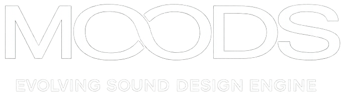

Archive
Organize, audition and edit your audio material non-destructively, then use it as a living source for generative sound design
S2D01 presents

MOODS is a macOS sound design system that turns selected audio materials into continuous, layered and non-repeating sonic environments
Live Stream
A continuous generative stream of evolving sonic environments created with MOODS
“Avvolge non solo il nostro senso dell’udito, ma anche il tatto e la vista, facendoci sprofondare in una dimensione cosmica dove il tempo resta sospeso.”
“It surrounds not only our sense of hearing, but also touch and sight, drawing us into a cosmic dimension where time is suspended.”
Organize, audition and edit your audio material non-destructively, then use it as a living source for generative sound design
Reveal unexpected combinations through three evolving sonic layers: foundation, motion and detail
Move from pure exploration toward directed sonic evolution, with musical roles, density and long-form behavior
MOODS is built around sound behavior, layered roles and evolving environments, not fixed timelines or static playlists
Start from your own recordings, libraries and sample archives, then turn them into a living sound source
Guide density, variation, darkness and movement while MOODS keeps the atmosphere alive
Create long-form sonic environments for streams, installations, composition and immersive listening.
MOODS is designed for sound designers, musicians, artists and long-form listening contexts where sound needs to evolve without static repetition.
Transform curated audio archives into layered atmospheres, textures and long-form sonic material.
Create evolving sound environments for exhibitions, performances and immersive spaces.
Support calm, non-repeating sonic atmospheres for focus, presence, decompression and contemplative listening.
Maintain sonic continuity over long durations without relying on fixed playlists.
Early Access
One-time purchase planned No monthly or yearly subscription
No spam. Only MOODS beta access, release news and major project updates
Community
A quiet space to follow development updates, live test sessions, listening notes and feedback around MOODS.